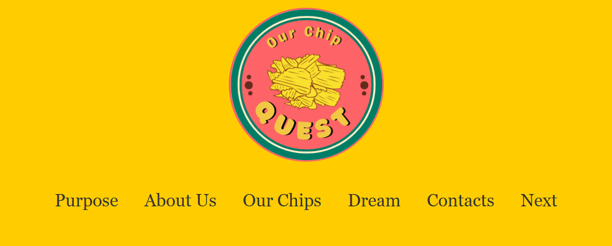
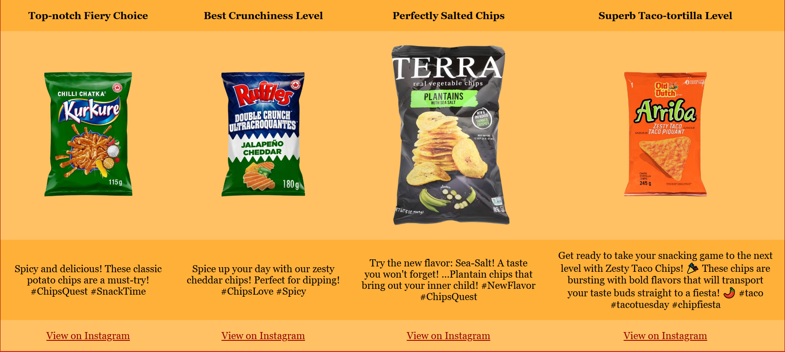
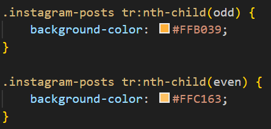
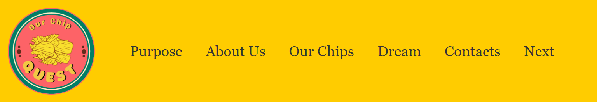
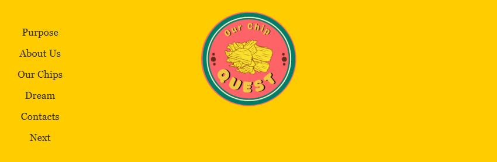
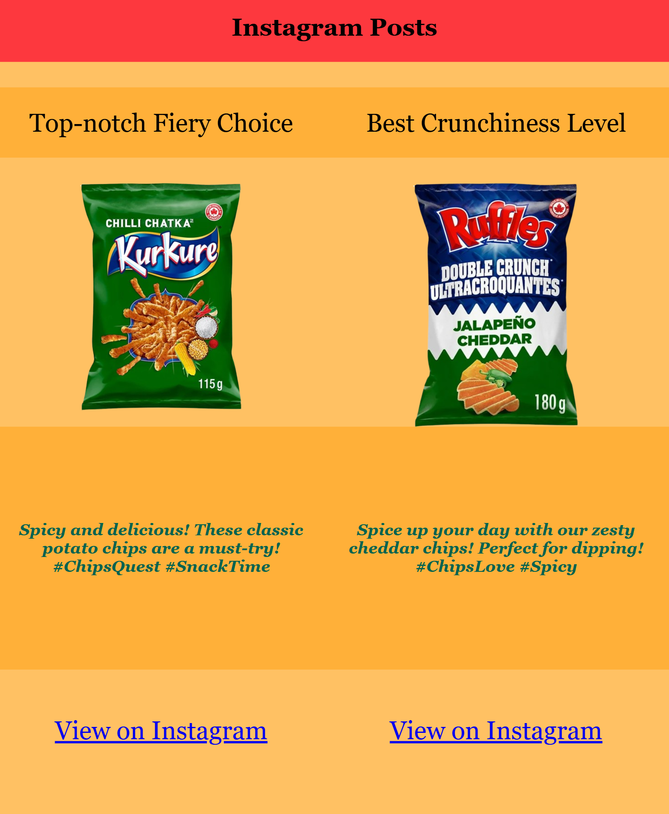
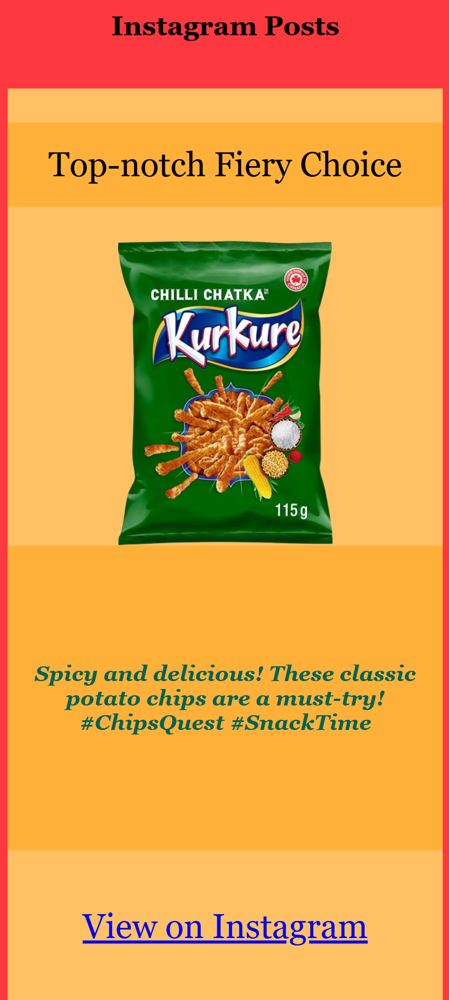

Assignment 1
We needed to apply Gestalt principles, use low-fidelity prototyping, and build a
well-structured design with semantic HTML tags, accessible images, consistent navigation, and CSS styling.
Crafted consistent headers and footers to unify the look and feel of the website.

Challenges
Aligning the navigation menu due to a lack of knowledge about flexbox
Created a dynamic table showcasing our favorite Instagram posts featuring different chip choices.

Challenges

Using specific CSS selectors was confusing, but we resolved it through our own research.
We planned the design and content together, split tasks effectively, and I applied new HTML and
CSS skills.
While some design aspects caused confusion, consistent communication helped. For future assignments, I'd focus
on detailed planning, clear understanding of tasks, and setting internal deadlines.
Assignment 2
My partner and I enhanced our previous website implementing features that made it more accessible to a diverse
audience and responsive across various devices.
Click here to view Our Chips Quest!
Navigation menu on medium sized devices.

Navigation menu on small sized devices.

Review
It was exciting to see how the browser adjusted as we changed the device size, and it made me reflect on
how similar features work in apps I use, like WhatsApp.
Table on medium sized devices.

Table on small sized devices.

Review
I gained insights into how columns and rows and layouts in general adapt on different screen dimensions.
We took a different approach to this assignment compared to Assignment 1, working more
individually.
Although our results varied, I learned a lot about how display types like flexbox and grid affect element
tags differently and how they cascade effectively using semantic structure.